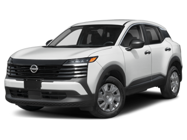

Nissan Kicks

Visão Geral
Motor: 1.0 turbo, 3 cilindros, flex
Velocidade Máxima: 175 km/h
Aceleração 0-100 Km/h: 10,8 s
Potência Máxima: 125 cv a 5.000 rpm
Porta-malas: 470 litros
Carga útil: 400 kg
Lugares:5
Marchas: 6
O desing é prático para uso urbano, com dimensões que facilitam manobras em ruas estreitas.
A direção elétrica contribui para uma condução mis leve e agradável.
No geral, o Nissan Kicks parece entregar um bom equilibrio entre performace, segurança e conforto.
Para quem busca um SUV prático e que atenda ás necessidades diárias, esse modelo merece ser considerado.